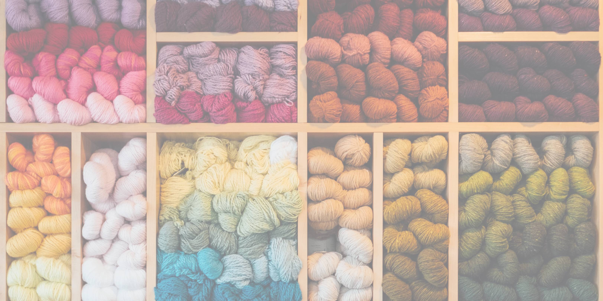

I started my crochet journey in fifth grade, when a family member gifted me a beginner's knitting loom. After learning to use it and making a pretty sorry hat, I decided I wanted to learn traditiinal knitting with two needles. It proved to be very difficult for my 12 year old mind. I discovered crochet when I was looking for an easier way to learn knitting, seeing as it only uses one needle, or hook, instead of two. I was quickly more interested in it and would have my mom check out books of crochet patterns from the librrary every few weeks. Crochet is something that I have kept up with to this day, and I have completed many projects. I love seeing on social media and just the culture of modern day that crochet and other textile arts are making its comeback.